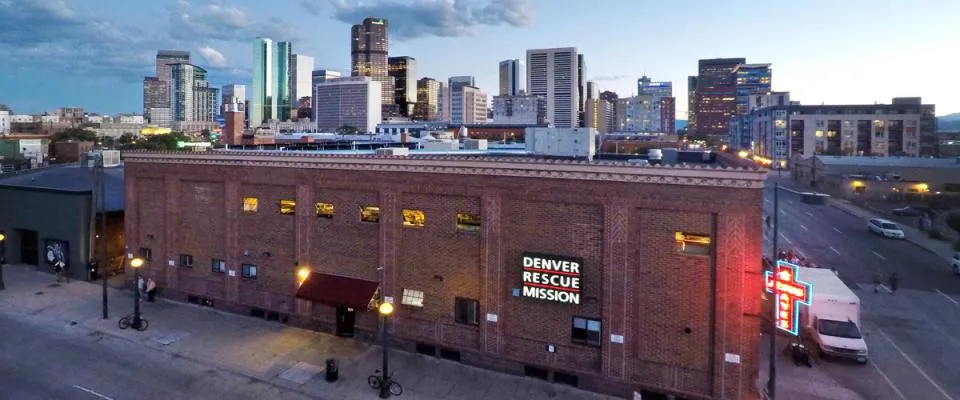
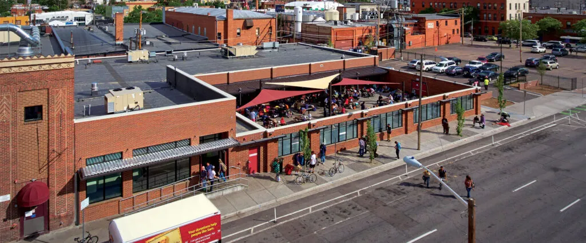
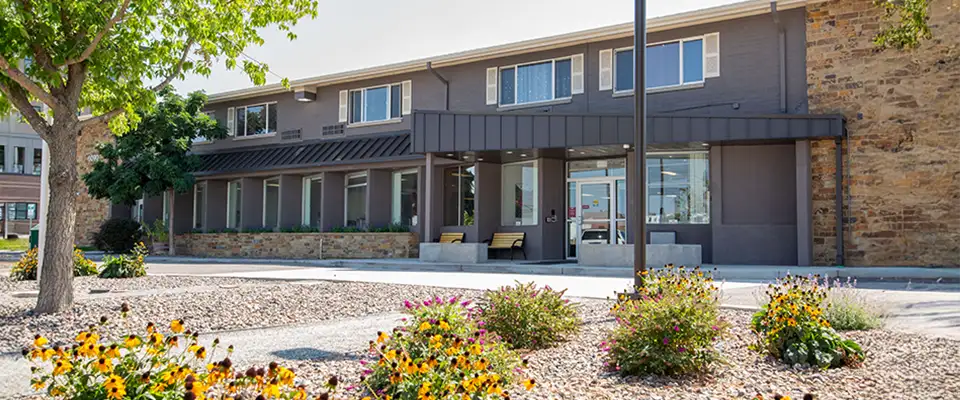
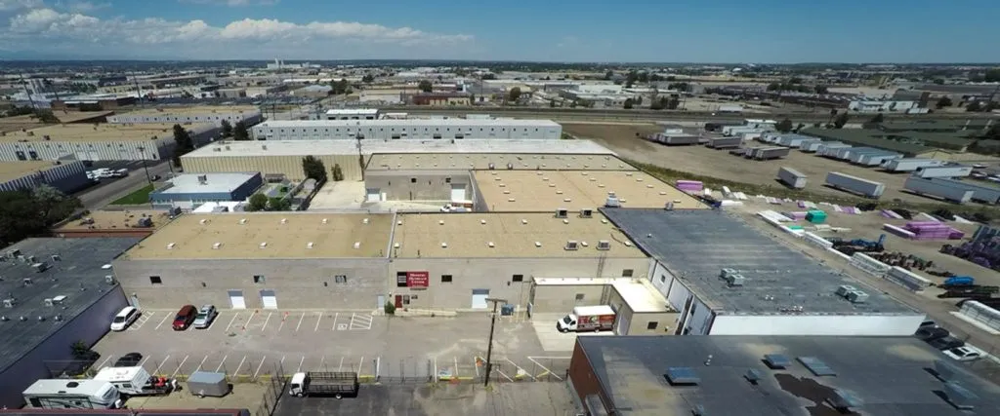
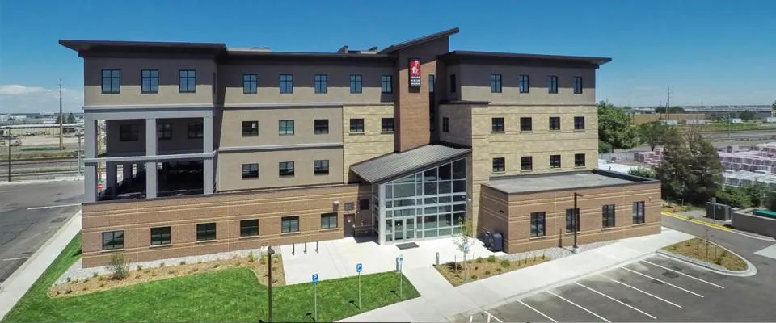
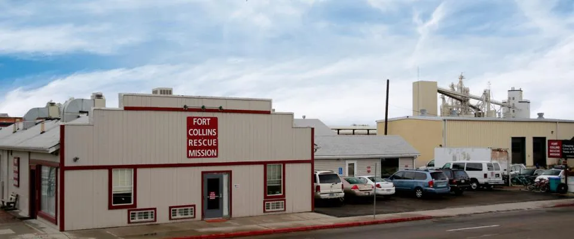
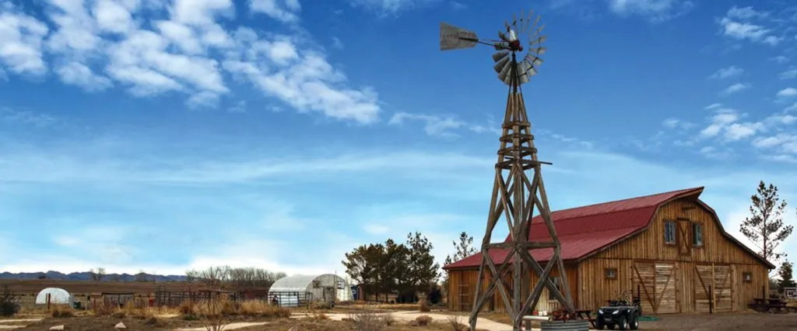
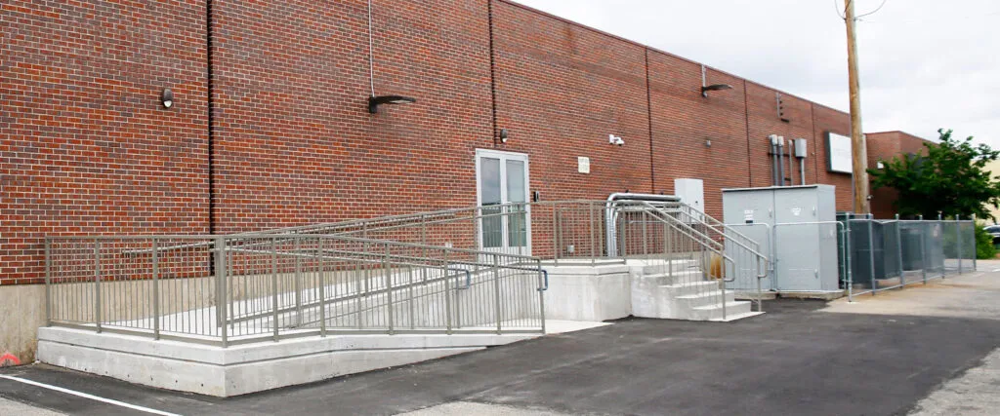

Locations

Lawrence Street Shelter
The Lawrence Street Shelter is Denver Rescue Mission’s most recognizable location.
View Location
Lawrence Street Community Center
Our Community Center offers people experiencing homelessness a safe place to stay during the day.
View Location
The Crossing
The Crossing hosts programs to help families and individuals develop the life skills and relationships needed to maintain self-sufficiency.
View Location
Ministry Outreach Center
The Ministry Outreach Center is the Mission’s central warehouse and distribution location, including a food pantry and clothing/furniture distribution to those in need.
View Location
Administration and Education
The Administration & Education building includes special classrooms for the educational aspects of our programs.
View Location
Fort Collins Rescue Mission
Fort Collins Rescue Mission serves the needs of people experiencing homeless in Northern Colorado through meals, shelter and assistance toward self-sufficiency.
View Location
Harvest Farm
Located in Wellington, Colorado, Harvest Farm is a 100-acre farm operated by Fort Collins Rescue Mission under the umbrella of Denver Rescue Mission.
View Location
48th Avenue Center
In partnership with the City of Denver, the Mission operates this shelter location throughout the year.
View Location